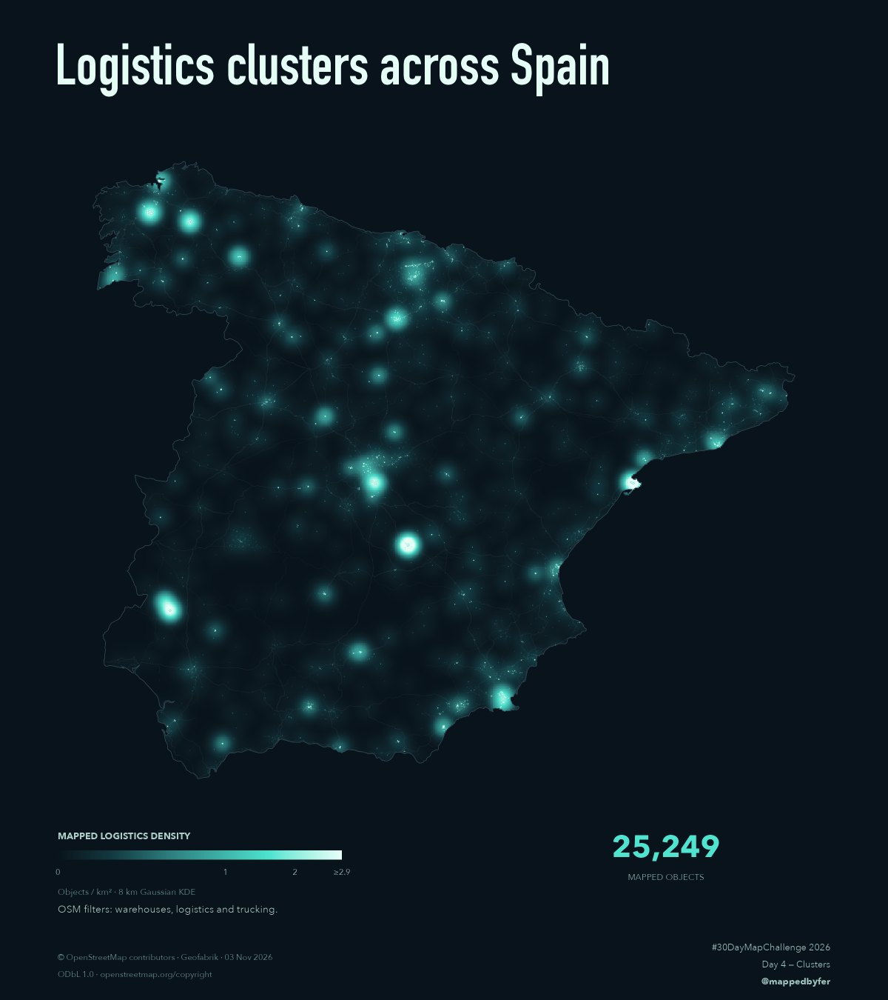

Logistics clusters across Spain

A geography of mapped storage.
25,249 OpenStreetMap objects form a luminous portrait of storage and logistics across mainland Spain. Fine points locate individual mapped features, while a smooth mint glow reveals where they concentrate. Motorways and trunk roads provide a faint geographic reference.

The idea
Explore where specifically tagged warehouses, logistics and trucking objects concentrate. The glow shows the density of mapped objects, with each observation weighted equally. It does not measure freight volume, operating capacity or economic importance. Roads add context; they do not represent observed flows between clusters.
How it was made
The Spain OSM extract was filtered for building=warehouse, building:use=warehouse and industrial=warehouse/logistics/trucking; general industrial land alone was excluded. Geometries were repaired, duplicate objects removed and polygons converted to interior points. Analysis uses EPSG:3035 in metres: DBSCAN with a 3 km radius and 10-point minimum, plus Gaussian KDE with an 8 km standard deviation on an approximately 2 km grid. Brightness encodes objects per km² with square-root scaling; the top 0.1% of positive land density values share the marked upper colour limit. The selected poster is 4800 × 5400 pixels. Download the reproducible R workflow and validation reports (ZIP).
Sources & limitations
© OpenStreetMap contributors, via the Geofabrik Spain extract of 3 November 2026, under ODbL 1.0. Outline: Natural Earth, public domain. Regional tagging and mapping completeness vary. Small storage buildings account for many observations, and warehouse tags do not confirm current logistics operations. The map is not a verified inventory of active logistics centres. Smoothing and coastal clipping also affect the visible pattern.